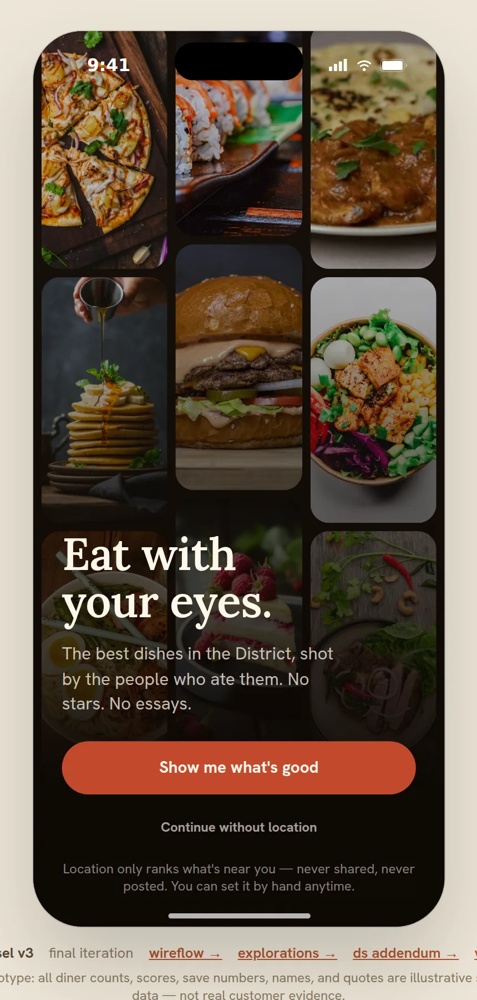
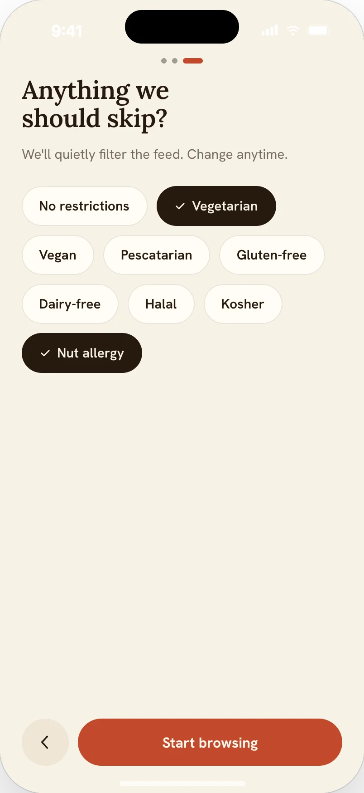
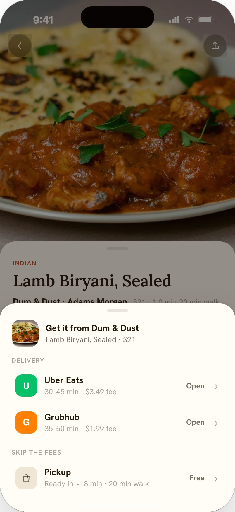

Morsel — eat with your eyes
A self-directed concept: keep photo-first discovery immediate, and be blunt about what the app knows. In one line, safety context follows the dish, from discovery through ordering.
The betA photo-first app should earn more trust, not less, for being blunt about what's in a dish, how good the evidence is, and where coverage ends. A hypothesis, not a research finding.
The principlesLead with appetite: the photo is the interface; metadata earns its way in. Preferences rank; allergies protect: taste re-ranks, lifestyle filters, allergies exclude and flag. Never imply more certainty than the evidence supports.
StatusFunctional prototype · v3.1 · not shipped Not evaluated with users; restaurants, diner identities, quotes, order counts, and trust scores are illustrative prototype data.
HOW TO READ THIS PAGE — FUNCTIONAL works in the prototype · SIMULATED illustrative prototype data · PROPOSED a plan or model, never a result. Every screen below is the source project's own markup, rendered live on this page — not a screenshot. The dietary model is deliberately allergy‑aware, never “allergy‑safe” — every warning tells the diner to confirm with the restaurant, because menu data can lag and kitchens share surfaces. No score appears without a disclosed method. No usability sessions have been run.

TRY THE PROTOTYPEV3 BUILD · ILLUSTRATIVE DATA
MORSEL V3 · FULL FLOW
OPEN FULL PROTOTYPE ↗

SANDBOXED EMBED · FLAG A NUT ALLERGY IN ONBOARDING, THEN TRY TO ORDER A CONFLICTING DISH · ILLUSTRATIVE DATA
Fully interactive version ships with the deployed site (v2/morsel-proto/).
THE SHAPE OF THE PROJECTHONEST NUMBERS ONLY
3
TIERS IN THE DIETARY MODEL: TASTE, LIFESTYLE, ALLERGY
16
AUDITED V3.1 STATES, RENDERED LIVE FROM THE PROTOTYPE
0
USABILITY SESSIONS RUN; TWO-ROUND PLAN BELOW
APPETITE IS EMOTIONAL.
CHOOSING SAFELY IS NOT.
Food apps optimize for the scroll. Give a diner a real constraint (an allergy, a vegetarian kitchen, an uncovered city) and most photo feeds go quiet or quietly lie. The feed was the easy part. The system around it was the work.
DECISION 1 ·
PREFERENCE VS
PROTECTION
v1 had one flat “dietary needs” list, with Vegetarian and Nut allergy as equivalent chips. That's a category error: one is a preference, the other a hazard. In v3.1 I split the model into tiers. Lifestyle choices filter the feed and loosen in one tap; allergies are a hard rule everywhere the dish travels. No reset or “clear filters” path ever touches allergy settings.

How allergy context follows a dish. Conflicting dishes leave feed and search; saves are kept and flagged; a dish opened directly from a save or shared link explains why it's still visible; and the order sheet locks every delivery and pickup option until the diner explicitly acknowledges the conflict.

DECISION 2 ·
EVIDENCE WITHOUT
MANUFACTURED CERTAINTY
Star ratings compress bias, self-selection, and revenge reviews into one unfalsifiable number. Morsel proposes “X% would order again,” counted from repeat orders through the app's own handoffs. Too new for honest math? The design abstains: “New on Morsel — no score yet.”
DECISION 3 ·
APPETITE VS
INFORMATION SCENT
A photo-only feed maximizes appetite but hides price, distance, and name behind a tap. After exploring labeled cards, hybrid density, and a split model, I kept the grazing feed photo-only and gave search results full labels: searchers compare, browsers graze. The tradeoff is untested; it's the first task in the plan.
RESILIENCE —
THE UNGLAMOROUS
PATHS
Honest states for the paths most concepts skip. Location off relabels the feed to “For you,” discloses that distances are from a demo neighborhood, and disables “Nearest” sort. No-coverage never shows one city's dishes under another city's name.
ACCESSIBILITY —
AS IMPLEMENTED
Semantic controls with aria-pressed/aria-selected/role="alert" where state matters; no nested interactive elements; a keyboard-only pass on the critical order path (saved tile → detail → save toggle → order → acknowledgement → provider); the order sheet as a named modal dialog (focus trapped, Escape closes, focus returns to the trigger); a live region for saves; ≥44px touch targets; and 140% text scale that reflows without loss. Not claimed: WCAG conformance or an assistive-technology audit. Screen-reader evaluation with real users is still owed.
APPENDIX —
PROCESS ARTIFACTS
The full v3.1 state set and four process documents ship with this site:
WHAT REMAINS
UNKNOWN
PROPOSED No sessions run, so no results. The plan is two rounds: five discovery sessions, then a safety round with participants who manage real food allergies plus a domain reviewer, where any misreading of the allergy promise is a fix-first finding.
- Does photo-only browsing survive real decision pressure, or do users bounce to details to check price?
- Does the trust metric read as evidence or as decoration?
- Does the acknowledgement gate read as care or as friction?
The hard part was deciding when the interface stays quiet, when it explains itself, and when it interrupts momentum. Appetite gets silence; evidence gets a visible method; a flagged allergen gets a full stop.
Allergy promiseaware, never “safe”: confirm with the kitchen
Evidence ruleno score without a disclosed method
Research runnone; two-round plan, safety round included